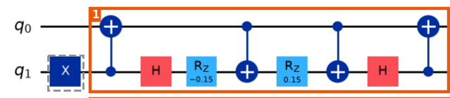

Learn · hadron circuit · brickwork, part 1
Brick 1 of the brickwork circuit, worked out by hand on two qubits. States are written |q0 q1⟩.

From brickwork_annotated.png. The dashed X on q1 is the vacuum's starting flip; the orange box is the pair gate.
In order: CX(control q1 → q0), H(q1), Rz(−0.15)(q1), CX(q0 → q1), Rz(+0.15)(q1), CX(q0 → q1), H(q1), CX(q1 → q0). 4 CNOTs. The 0.15 is the kinetic strength.
The only rule needed for the Rz turns: Rz(θ)|0⟩ = e−iθ/2|0⟩, Rz(θ)|1⟩ = e+iθ/2|1⟩ — it only adds a phase, never changes probabilities. (As an operator: Rz(θ) = cos(θ/2)·I − i·sin(θ/2)·Z.)
| state | gate | result |
|---|---|---|
| start | X on q1 | |01⟩ |
| |φ1⟩ | CX (q1 → q0) | |11⟩ |
| |φ2⟩ | H on q1 | (|10⟩ − |11⟩)/√2 |
| |φ3⟩ | Rz(θ) on q1 | (e−iθ/2|10⟩ − e+iθ/2|11⟩)/√2 |
| |ψ4⟩ | CX (q0 → q1) | (e−iθ/2|11⟩ − e+iθ/2|10⟩)/√2 |
| |ψ5⟩ | Rz(−θ) on q1 | (e−iθ|11⟩ − e+iθ|10⟩)/√2 |
| |ψ6⟩ | CX (q0 → q1) | (e−iθ|10⟩ − e+iθ|11⟩)/√2 |
| |ψ7⟩ | H on q1 | ½[e−iθ(|10⟩+|11⟩) − e+iθ(|10⟩−|11⟩)] |
| |ψ8⟩ | CX (q1 → q0) | ½[e−iθ(|10⟩+|01⟩) − e+iθ(|10⟩−|01⟩)] |
With the Bell states β01 = (|01⟩ + |10⟩)/√2 and β11 = (|01⟩ − |10⟩)/√2:
|ψ8⟩ = (1/√2) [ e^(−iθ) β01 + e^(+iθ) β11 ] start: |01⟩ = (1/√2) [ β01 + β11 ]
Same two Bell states, same weights. The whole pair gate did only one thing: it turned β01's phase by e−iθ and β11's by e+iθ.
Why these two Bell states? They are the eigenstates of the hopping operator XX + YY. Using X|0⟩=|1⟩, X|1⟩=|0⟩, Y|0⟩=i|1⟩, Y|1⟩=−i|0⟩:
(XX + YY)|01⟩ = |10⟩ + |10⟩ = 2|10⟩ (XX + YY)|10⟩ = 2|01⟩ (XX + YY)|00⟩ = |11⟩ − |11⟩ = 0 (same for |11⟩) so (XX + YY) β01 = +2 β01 (XX + YY) β11 = −2 β11
An exponential of an operator turns each eigenstate by its own phase. With eigenvalues +2 and −2:
pair gate = exp(−iθ (XX + YY) / 2), θ = −0.15 β01 → e^(−iθ) β01 β11 → e^(+iθ) β11 |00⟩, |11⟩ unchanged
Checked by computer: the 8-gate circuit equals this exponential exactly, for every input.
Collect the terms of |ψ8⟩ by basis state instead:
|ψ8⟩ = cos θ |01⟩ − i sin θ |10⟩
With θ = −0.15:
| outcome | amplitude | probability |
|---|---|---|
| |01⟩ (where it started) | cos 0.15 = 0.989 | 97.8% |
| |10⟩ (the 1 moved to q0) | +i·sin 0.15 = 0.149i | 2.2% |
Next: the SWAP (bricks 7–11) and the electric gate (bricks 18–23).